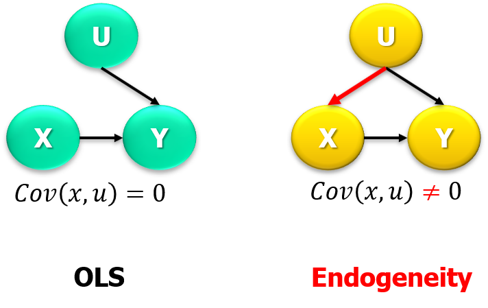

Variables Instrumentales
Contents
Variables Instrumentales¶
IV: Variables Instrumentales (Instrumental Variables)
Introducción¶
En la parte inicial de los cursos en teoría en econometría (ej. Econometría I):
Relación lineal entre variables representada por un modelo lineal.
Por ejemplo, se resume el poder predictivo (el efecto) que tiene la escolaridad, controlando por experiencia, en el salario de un individuo usando la siguiente función de expectativas condicional
\[\mathbb{E}[log(Salario)_i|X_i]=\beta_0 + \beta_1Escolaridad_i+\beta_2Experiencia_i\]Se hacian algunos supuestos sobre \(u_i\), lo que permite el uso de la expresión ‘efecto causal’. Además, se discute cómo afecta la heterocedasticidad o la autocorrelación.
Un supuesto relevate tiene que ver con la relación entre la variable explicativa \(x\) y la variable explicada \(y\): \(Cov(x,u)=0\).
El problema de la endogeneidad se produce cuando \(Cov(x,u)\neq0\). El siguiente DAG (Directed Acyclic Graph) ilustra el caso:
 Varias situaciones pueden llevar a endogeneidad. Una trivial es variables relevantes omitidas:
Sea el verdadero (T) modelo \(Y=X_1\beta_1+X_2\beta_2+u_T\), con \(\mathbb{E}(u_T|X_1,X_2)=0\), y sea el modelo estimado (E) \(Y=X_1\beta_1+u_E\). Es posible notar que \(u_E=f(X_2,u_T)\).
Usando solo datos de \(Y\) y \(X_1\), el estimador de OLS sería \(\hat{\beta}_1=(X_1'X_1)^{-1}(X_1'Y)\). Pero considerando el verdadero modelo, el estimador se puede expresar como \(\hat{\beta}_1=\beta_1+(X_1'X_1)^{-1}(X_1'X_2)\beta_2+(X_1'X_1)^{-1}(X_1'u_T)\).
Lo que implica que el estimador es sesgado, \(\mathbb{E}_X(\hat{\beta}_1)=\beta_1+(X_1'X_1)^{-1}(X_1'X_2)\beta_2\), y la dirección del sesgo depende de la relación entre \(X_1\) con \(X_2\) y \(\beta_2\). En otras palabras,
Ejemplo:
En el caso de la regresión entre escolaridad y salario, pensemos en la habilidad. Al analizar la variación exógena de la escolaridad en OLS, sería como si la opción de elegir más escolaridad fuera aleatoria, o al menos no correlaciona con las variables omitidas (habilidad). Sin embargo, no es así.
Una posible solución es controlar, en la regresión, por habilidad. Sin embargo, no es observable. Nota: en este ejemplo el uso de panel (efecto fijo) sería de ayuda.
Supongamos ahora que existe una variable de asignación aleatoria, \(z\), que tiene un efecto causal en la variable explicativa de interés \(x\). Se puede pensar en usar esa variable \(z\) como una especie de ‘experimento natural’. La variable \(z\) se llama instrumento o variable instrumental.
Condiciones para un instrumento¶
Para una variable funcionar como instrumento debe satisfacer algunas condiciones. De manera informal, se pueden describir las condiciones así: el instrumento no está incluido en el modelo principal (no hacer parte de la ecuación principal), no tiene relación con la parte residual y se relaciona (parcialmente) con la variable explicativa de interés.
Formalmente, las propiedades esperadas de un instrumento son:
Relevancia (\(z\rightarrow x\)). El instrumento es una variable que está correlacionada con la variable explicativa de interés \(x\). \(Cor(z,x)\neq0\).
Exclusión (\(z\rightarrow x \rightarrow y\), \(z\rightarrow/y\)). El instrumento es una variable que no causa directamente la variable explicada (outcome \(y\)). \(Cor(z,y|x)=0\).
Exógeno (\(u\rightarrow/z\)). El instrumento no está correlacionado con la(s) variable(s) omitidas. Ortogonalidad del residuo, \(Cor(z,u)=0\).
Gráficamente,
Ejemplo:
Las siguientes tablas listan algunos instrumentos usados en la literatura.
y |
x |
Variable no observada |
instrumento z |
|---|---|---|---|
salario |
escolaridad |
habilidad |
Educación del padre |
salario |
escolaridad |
habilidad |
Distancia al colegio |
salario |
escolaridad |
habilidad |
Asignación militar aleatoria |
salud |
fumar |
comportamiento (salud) |
impuesto al tabaco |
y |
x |
fuente endogeneidad |
instrumento z |
|---|---|---|---|
conflicto armado |
crecimiento PIB |
simultaneidad |
lluvia |
Estimación¶
Caso de identificación exacta.¶
Partamos con un caso trivial en el que solo hay un regresor (\(k=1\)) \(x\) y un instrumento (\(r=1\)) \(z\). En ese caso, podemos usar \(Cov(\cdot)\) a ambos lados del modelo lineal, luego usar la propiedad \(Cov(z,u)=0\), para finalmente despejar el parámetro de interés,
por ende, usando los equivalentes muestrales de las covarianzas, se llega a
Otra alternativa es ver el modelo como un caso del Método de Momentos:
Sea \(k=r=1\)
\(\mathbb{E}(z_iu_i)\) implica \(h(\beta,u_i,z_i)=z_iu_i\). Por ende,
\[\begin{split}\begin{eqnarray}\left(\frac{1}{N}\right)\sum_i{z_iu_i}&=&0 \\ \sum z_iy_i-\left(\sum z_ix_i\right)\hat{\beta}&=&0 \\ \hat{\beta}&=&(z'x)^{-1}(z'y) \end{eqnarray}\end{split}\]
Es posible usar esta ecuación para resaltar las propiedades deseadas de un instrumento. Reescribiendo \(\hat{\beta}\) de la siguiente forma
es posible apreciar que \(\hat{\beta}_{IV}\) será consistente si a medida que \(N\rightarrow\): (i) el instrumento es relevante (no es débil) \(plim\,(z'x/N)= 0\); (ii) es válido \(plim\,(z'u/N)\neq0\).
2SLS (Two Stage Least Squares)¶
Como el nombre sugiere, hay dos etapas con dos regresiones involucradas. En la primera etapa, 2SLS busca la parte de las variables endógena y exógenas que se relaciona con el instrumento. Se lleva a cabo una regresión OLS de cada variable en un conjunto de instrumentos. La segunda etapa es la estimación del modelo original, pero reemplazando la variable endógena por la predicción obtenida en la primera etapa. El coeficiente obtenido es el estimador de \(\beta\) de 2SLS.
De forma más ilustrativa, veamos la siguiente regresión ‘a mano’. Sea \(x_1\) la variable endógena, \(x_2\) un regresor sin problemas de endogeneidad y \(z\) un instrumento (que satisface las propiedades deseadas):
Primera etapa. La idea es encontrar la parte exógena de \(x_1\) basado en el instrumento. La regresión sería (first-stage):
\[x_1=\gamma_1 z+x_2\gamma_2+\epsilon\]
Se obtiene \(\hat{x}_1\).
Segunda etapa. La idea es usar la parte exógena predicha por el instrumento para predecir la variable dependiente en el modelo original. La regresión sería (structural equation):
\[y=\hat{x}_1\beta_1 + x_2\beta_2+u\]
Se obtiene \(\hat{\beta}_1\).
Notas:
Una primera nota de precaución que emerge en este procedimiento (‘manual’) es sobre los errores estándar. Los s.e. de la segunda regresión no son los asociados a \(\hat{\beta}_1\) y deben ser ajustados.
Se debe revisar la fortaleza del instrumento. Una forma sencilla es mediante el resultado del test F de la regresión en la primera etapa. Otro estadístico es el Kleibergen-Paap rk Wald F.
Notar que el rol de \(x_2\) es ilustrar que se pueden incorporar otros controles. En ese caso, se puede pensar en \(x_2\) como un instrumento de sí mismo (como en OLS).
En el, poco común, caso de tener múltiples instrumentos, se pueden incorporar en la regresión de la primera etapa.
GMM¶
Veamos IV como un caso de GMM. Sea \(\omega_i=\{z_i,y_i,x_i\}\) un set de datos y \(\theta=\beta\) el vector de parámetros. Así, \(h(\theta,\omega_i)=z_iu_i\) y \(g(\beta,\omega_i,)=(1/N)\sum z_i(y_i-x_i'\beta)=N^{-1}(Z'y-Z'X\beta)\), con \(Z\) de dimensiones \(N\times r\). Por ende, la función objetivo es:
Las condiciones de primer orden:
En el caso de IV, \(W=\mathbb{S}^{-1}\equiv(1/N)(Z'Z)^{-1}\). Por ende, el estimador IV estándar para \(k\leq r\) es:
y la varianza asintótica: \(V(\beta)=(1/N)\left(X'Z\mathbb{S}^{-1}Z'X\right)^{-1}\).
Notas:
En caso de no homocedasticidad, \(\hat{\mathbb{S}}=(1/N)(Z'\hat{\Omega}Z)\), con \(\Omega=uu'\), lo que hace a GMM más eficiente.
El costo de GMM (vs IV) es que implica altos momentos, por lo que obtener valores razonables del estimador puede involucrar mayor tamaño de muestra (‘poor small sample properties’).